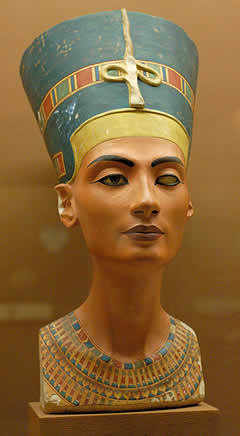
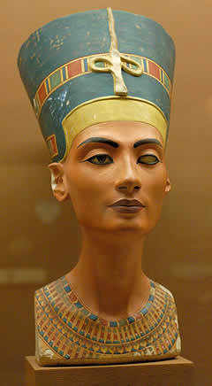

What is sculpture?

Sculpture is the art of carving, modeling, welding, or otherwise producing figurative or abstract works of art in three dimensions, as in relief, intaglio, or in the round.

Sculpture: A Journey Through Time
Sculpture is the art of carving, modeling, welding, or otherwise producing figurative or abstract works of art in three dimensions, as in relief, intaglio, or in the round.

Sculpture, one of the oldest forms of artistic expression, has been revered as one of the Fine Arts since ancient times. Its roots go back to prehistory, with the first artistic manifestations found in figures carved in stone, wood, and bone. An emblematic example is the Venus of Willendorf, dating from 24,000 to 22,000 BC, often symbolizing ritual or symbolic aspects linked to fertility, religion, and magic.


As time progressed, sculpture underwent remarkable evolution, encompassing more complex and sophisticated representations. Ancient civilizations such as Egypt, Mesopotamia, Greece, and Rome took sculpture to new heights of realism, aesthetic beauty, scale, and ambition. From small figures to colossal statues and architectural reliefs, these cultures used sculpture for decorative, narrative, religious, and commemorative purposes.
 

Sculpture is distinguished by its unique ability to transform raw materials into expressions of beauty, human emotion, and philosophical concepts. Occupying a three-dimensional space, it allows for a unique physical and visual interaction that can be experienced from multiple angles, giving it an expressive power and a presence that can deeply move the viewer.
Over the centuries, sculpture has continued to innovate, adopting a wide variety of styles, from classical realism to modern abstract. Sculptors have experimented with materials such as metal, plastic, and glass, reflecting and challenging the perceptions of their time. This continuous evolution demonstrates the ability of sculpture to capture the complexity of human experience through form, space, and texture.
Author: Unknown.
Meaning: Symbol of fertility and abundance in prehistoric cultures.
Additional Info: Discovered in Austria in 1908, the Venus of Willendorf is a small, ancient figurine standing just over 4 inches tall. Created during the Paleolithic era, its exaggerated features, including large breasts, abdomen, and vulva, likely symbolize fertility and reproduction.
Author: Unknown (Greek sculptor)
Meaning: Symbol of victory, triumph, and divine intervention.
Additional Info: The Nike of Samothrace, a renowned Hellenistic masterpiece, was originally installed at the Sanctuary of the Great Gods on the island of Samothrace. Believed to commemorate a naval victory, it features a dynamic composition with the figure appearing to land on a ship's prow.
Author: Michelangelo Buonarroti
Meaning: Symbol of courage, determination, and the triumph of good over evil.
Additional Info: Michelangelo's David, a Renaissance masterpiece, was initially commissioned for the Florence Cathedral's series of biblical statues. Known for its idealized depiction of the human form and psychological depth, it captures the heroic tension as David confronts Goliath.
Author: Auguste Rodin
Meaning: Symbol of human intellect and contemplation.
Additional Info: Originally part of Rodin's Gates of Hell, The Thinker later became an independent work. While often seen as Dante Alighieri contemplating the inferno, Rodin intended it to symbolize the universal human condition, reflecting on the complexities of existence.
Author: Auguste Rodin
Meaning: Symbol of love, desire, and intimacy.
Additional Info: The Kiss, inspired by Paolo and Francesca from Dante's Inferno, depicts intense passion and intimacy. Initially part of The Gates of Hell, it evolved into a standalone piece celebrating human relationships' beauty and complexity.

Author: Auguste Rodin
Meaning: Symbol of human suffering, sin, and redemption.
Additional Info: Rodin spent over 37 years on The Gates of Hell, an unfinished masterpiece featuring over 180 figures inspired by Dante's Inferno. It depicts scenes of damnation, suffering, and redemption, showcasing Rodin's mastery of expressive sculpture.
Author: Auguste Rodin
Meaning: Symbol of heroism, self-sacrifice, and civic duty.
Additional Info: Commissioned during the Hundred Years' War, The Burghers of Calais depicts six citizens who bravely offered themselves to save their city. Rodin's sculpture captures their solemn dignity and resolve as they prepared to surrender to the English king, Edward III.
Author: Frédéric Auguste Bartholdi (with structural engineering by Gustave Eiffel)
Meaning: Symbol of freedom, democracy, and hope.
Additional Info: The Statue of Liberty, designed by French sculptor Frédéric Auguste Bartholdi, was a gift from France to the United States in honor of the American centennial. Dedicated on October 28, 1886, it has become a symbol of freedom and democracy. The torch symbolizes enlightenment, while the broken chains at her feet represent freedom from oppression. Gustave Eiffel, renowned for the Eiffel Tower, designed the statue's iron framework.
The importance of sculpture lies in its rich history and its contribution to the cultural heritage of humanity. It continues to inspire, challenge, and provoke the viewer, asserting itself as an art form that captures the essence of the human experience.